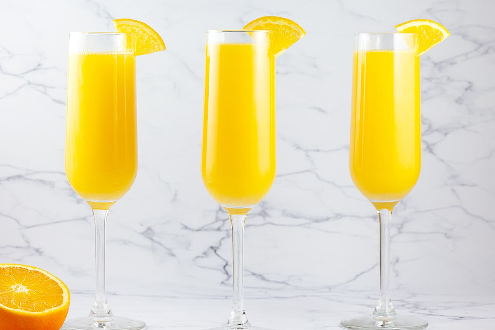

Mimosa
미모사
#초보자 #인디 음악 #상큼한 #탄산 없음 #가벼운 도수

Ingredients
- 프로세코 75ml
- 오렌지 주스 75ml
- 각얼음
Recipe
- 잔에 오렌지 주스를 먼저 붓습니다.
- 그 위에 프로세코를 천천히 부어줍니다.
- 바 스푼으로 잘 저어주고 각얼음을 넣어 시원하게 즐깁니다.
TIP! 원한다면 오렌지 필 트위스트로 가니쉬를 해보세요!
History
칵테일의 이름은 노란색 꽃이 피는 미모사 식물인 아카시아 딜바타(Acacia dealbata)의 이름을 따서 명명되었습니다.
사람들은 미모사 칵테일을 만든 파리 리츠(Paris Ritz)의 바텐더이자 칵테일 작가인 프랭크 마이어(Frank Meier)에게 감사를 표하지만 그의 발명품에 대한 특별한 상징이 있는 혼합 음료에 관한 마이어의 1934년 책에서는 미모사에 이 기호를 사용하지 않습니다. 이는, 칵테일의 기원이 불분명하기 때문입니다.
미모사는 Buck's Fizz라는 칵테일의 변형으로 간주될 수도 있고 그 반대의 경우도 가능하며 국제 바텐더 협회는 단순히 미모사가 "벅스 피즈(Buck's Fizz)라고도 알려져 있다"고 말합니다.
미모사는 1960년대 미국에서 인기를 끌었던 역사가 있으며, 시드니 모닝 헤럴드에 게재된 뉴스 기사는 엘리자베스 2세 여왕이 남프랑스를 방문한 후 버마의 얼 마운트배튼(Earl Mountbatten)이 그녀에게 소개한 미모사를 마시는 것에 대해서 작성했따고 합니다.